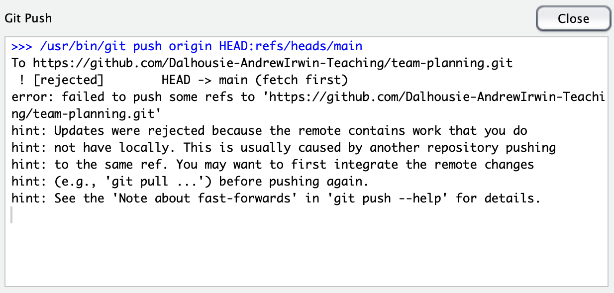
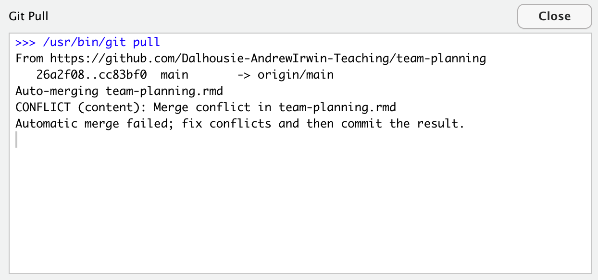

19 Collaborating with GitHub
In this lesson I’ll describe the basics of collaborating on a project with GitHub. This will be a very simple collaboration model; other more complex workflows are possible. (In particular, we won’t be doing forks, branches, or pull requests. I encourage you to learn about those, but you don’t need to for the simple collaboration we will be doing.) I’ll assume you are able to work by yourself on a git repository hosted on GitHub using RStudio as we have for the assignments in the course.
19.1 The basics
For the collaborative project, I will create a repository for each team and give each team member write access to the repository. You should start, as always by creating (cloning) the project onto your computer from GitHub.
There are now at least three copies of the repository: the remote on GitHub, a copy on your computer, and a copy on your teammate’s computer. These are all independent of each other. When you edit a file, you make changes to files on your computer in the “working directory”. Eventually you stage and commit your changes to your local repository. You then need to sychronize your changes with GitHub and, eventually, your teammate needs to get your changes too.
19.2 Push and pull
Getting changes from GitHub is called “pulling” (down arrow in the Rstudio git panel). Sending your committed changes to GitHub is called “pushing” (up arrow in the git panel.)
I suggest when you sit down to work that you start by pulling changes from GitHub. Then do your work. Stage and commit your changes. Finally, before you stop work for the day, push your changes to GitHub.
19.3 Changes that don’t conflict
If person A edits file 1.rmd and person B edits file 2.rmd, then they both commit their edits and push them to GitHub, there will be no conflict with changes made by the other person. They both need to pull the changes made by their teammate to have a complete version.]
If your teammate has pushed changes to GitHub, then you try to push changes without first getting their version, you will get an error message from git, displayed in a pop-up window:
The way to resolve this problem is to close the message box, then pull the remote version from GitHub. There are two likely outcomes here:
- You are told that there are no conflicts
- You are told there are unresolvable conflicts that you need to address
In the situation I’ve described above, the changes are not conflicts, so git will merge the changes. You still need to push your changes to GitHub by clicking the up arrow.
19.4 Resolving conflicts (in the repository)
If person A and person B both edit the same file “at the same time” (meaning, before the other person has had a chance to push the edits to GitHub so you can pull the edits to your computer before you begin to work) then the second person to push changes to that file may get a message that there is a conflict.
Git records changes line by line to a file (see the line numbers in the left margin of the Rstudio editing window.) If all the edits made by person A are on different lines from the edits made by person B, then git will automatically merge the two versions.
If both people edit the same line, then git will not know how to resolve the conflicts. When you pull the remote version to your computer, the file will be edited to show the conflicting changes, like this:

You need to edit the file to fix the problems. Git doesn’t supervise you here, so there are no outside rules. Just read both versions, decide what you want, and delete anything you don’t want. Then stage, commit, and push your changes.
Note, the “conflict” resolution doesn’t help you and your partner if you actually disagree about something! That is not a problem that can be solved by software. Git simply helps you manage editing the same file and knowing if your proposed changed disagree.
19.5 Reviewing diffs
When you sit down to work on your project, you should always start by pulling the remote version to your computer. This will make sure you have your partner’s latest work. If you see the message “Already up to date.” you know your partner didn’t make changes since you worked on the files. If you see some other message, git will tell you what files were changed. You can review these changes using the “diff” tool in Rstudio’s git pane.
Open up the “diff” pane and click on History (button in the upper left). By clicking on a commit message in the top panel, you can see the changes made in files. The bottom panel will show the changes, highlighting new lines in green and deleted lines in red. Differences (“diffs”) are recorded one line at a time, so if the change was an edit, you will usually see pairs of red and green lines with the old version in red and the new version in green. If the text is new, with no old version, you will see just green. If lines were deleted and not replaced with anything, you will see just red lines.
19.6 Working directly through the GitHub website
I find the workflow described easy to use and I strongly suggest it because it lets you use all the features of Rstudio and the collaboration tools of GitHub. There are other ways to interact through GitHub and I’ll describe some of these briefly.
19.6.1 You can edit files directly through the GitHub website
Find the file you want to edit. Click on the link so you see the contents of the file. (This works with .Rmd files, but not some more complicated files.) Click the pencil (“edit”) icon in the upper right area of the window where your file is shown. Make your edits. Scroll to the bottom of the window and click “commit” to the main branch.
These edits are particularly handy if you are trying to edit on a tablet or someone else’s computer.
19.6.2 You can upload or download files directly to your repository through the website.
In the main window for the project, beside the bright green ‘Code’ button, click “Add file”. Here you can upload a new file to the repository.
19.7 Further reading
The exercises in the first link are very helpful, although they are written using the git command line tutorial instead of the buttons in Rstudio.
- Collaboration tutorial from University of Toronto, including our case of two people working together without a team lead managing changes
- Software Carpentry lessons on git and github
- Using github for collaboration on a software package (the MIT general circulation model)
- compareThis is an add-in for Rstudio to help you visualize and resolve merge conflicts.
- Using git with Rstudio